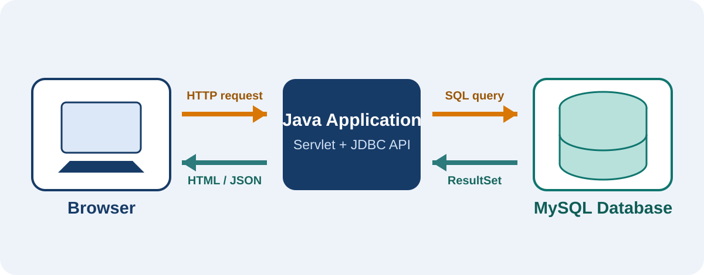
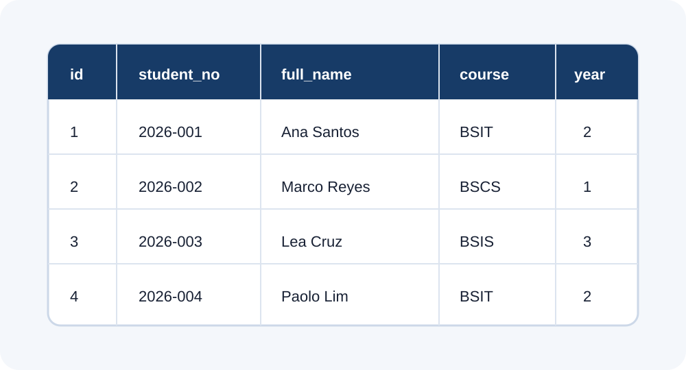
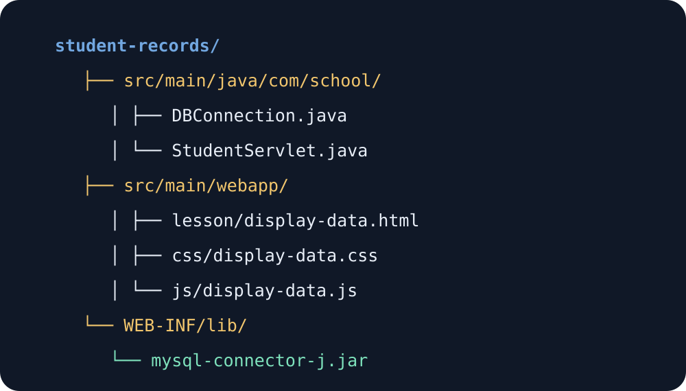
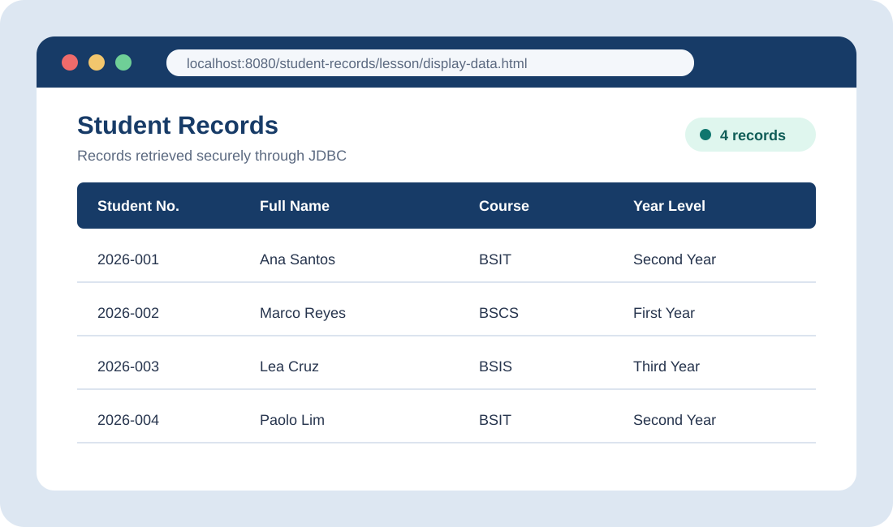

Explain
Define a database, DBMS, JDBC, driver, connection, statement, and result set.
Lesson 05 Database Programming
Retrieving MySQL records with Java and presenting them clearly in display-data.html
// 1. Connect to MySQL
Connection conn =
DBConnection.getConnection();
// 2. Execute the query
PreparedStatement stmt =
conn.prepareStatement(
"SELECT * FROM students"
);
// 3. Read every row
ResultSet rs = stmt.executeQuery();Learning guide
At the end of this lesson, learners should be able to explain the complete data flow and build a secure read-only JDBC feature.
Define a database, DBMS, JDBC, driver, connection, statement, and result set.
Create a MySQL database and a structured table with appropriate data types.
Use the MySQL Connector/J driver to connect a Java application to MySQL.
Retrieve rows safely and present them as a readable, responsive HTML table.
Part I · Core concepts
A working database feature depends on several components. Each one has a clear responsibility.
An organized collection of related data. In this module, the database stores student records in rows and columns.
Database Management System software—such as MySQL—that creates, stores, protects, and retrieves data.
Java Database Connectivity provides standard Java interfaces for connecting to and working with relational databases.
Vendor-specific software that translates JDBC calls into instructions understood by MySQL.
The big picture
The browser never connects directly to MySQL. Java receives the browser request, JDBC communicates with the database, and Java returns safe output to the page.

| Object | Primary purpose | Typical method |
|---|---|---|
Connection | Maintains a session with the database. | DriverManager.getConnection() |
PreparedStatement | Sends a precompiled, parameterized SQL command. | prepareStatement(sql) |
ResultSet | Holds rows returned by a SELECT query. | executeQuery() |
SQLException | Describes database access errors. | getMessage() |
Part II · Guided laboratory
Complete the steps in order. After every step, use the verification box before continuing.
Database preparation
Open MySQL Workbench or phpMyAdmin, create the school_db database, then create a students table. A primary key uniquely identifies every row.
CREATE DATABASE school_db;
USE school_db;
CREATE TABLE students (
id INT AUTO_INCREMENT PRIMARY KEY,
student_no VARCHAR(20) NOT NULL UNIQUE,
full_name VARCHAR(100) NOT NULL,
course VARCHAR(50) NOT NULL,
year_level TINYINT NOT NULL
);
students table.DESCRIBE students;. Confirm that five columns appear and id is the primary key.Sample records
Test data helps confirm that the connection and query work. Insert at least four rows, then retrieve them with a simple SELECT statement.
INSERT INTO students (student_no, full_name, course, year_level)
VALUES
('2026-001', 'Ana Santos', 'BSIT', 2),
('2026-002', 'Marco Reyes', 'BSCS', 1),
('2026-003', 'Lea Cruz', 'BSIS', 3),
('2026-004', 'Paolo Lim', 'BSIT', 2);
SELECT * FROM students ORDER BY full_name ASC;INSERT creates rows, while SELECT reads rows. ORDER BY controls their display order without changing stored data.Project setup
Download MySQL Connector/J from the official MySQL website. Place the JAR file in WEB-INF/lib, or add the Maven dependency. Keep Java, HTML, CSS, and JavaScript in their proper folders.

<dependency>
<groupId>com.mysql</groupId>
<artifactId>mysql-connector-j</artifactId>
<version>26.7.0</version>
</dependency>WEB-INF/lib.Java connection
DBConnection.javaThis utility class keeps connection details in one place. Change the username and password to match your local MySQL account.
package com.school;
import java.sql.Connection;
import java.sql.DriverManager;
import java.sql.SQLException;
public final class DBConnection {
private static final String URL =
"jdbc:mysql://localhost:3306/school_db"
+ "?useSSL=false&serverTimezone=UTC";
private static final String USER = "root";
private static final String PASSWORD = "";
private DBConnection() { }
public static Connection getConnection()
throws SQLException {
return DriverManager.getConnection(URL, USER, PASSWORD);
}
}jdbc:mysql://Tells Java to use the MySQL JDBC driver.localhost:3306Points to the local MySQL server and default port./school_dbSelects the database created in Step 1.Server-side retrieval
StudentServlet.javaThe servlet executes the SQL query and returns student rows as JSON. The try-with-resources statement closes JDBC resources automatically, even when an error occurs.
package com.school;
import jakarta.servlet.annotation.WebServlet;
import jakarta.servlet.http.HttpServlet;
import jakarta.servlet.http.HttpServletRequest;
import jakarta.servlet.http.HttpServletResponse;
import java.io.IOException;
import java.io.PrintWriter;
import java.sql.Connection;
import java.sql.PreparedStatement;
import java.sql.ResultSet;
@WebServlet("/students")
public class StudentServlet extends HttpServlet {
@Override
protected void doGet(HttpServletRequest request,
HttpServletResponse response)
throws IOException {
response.setContentType("application/json");
response.setCharacterEncoding("UTF-8");
String sql = "SELECT student_no, full_name, course, "
+ "year_level FROM students ORDER BY full_name";
try (Connection conn = DBConnection.getConnection();
PreparedStatement stmt = conn.prepareStatement(sql);
ResultSet rs = stmt.executeQuery();
PrintWriter out = response.getWriter()) {
StringBuilder json = new StringBuilder("[");
boolean first = true;
while (rs.next()) {
if (!first) json.append(',');
first = false;
json.append(String.format(
"{\"studentNo\":\"%s\",\"fullName\":\"%s\","
+ "\"course\":\"%s\",\"yearLevel\":%d}",
escape(rs.getString("student_no")),
escape(rs.getString("full_name")),
escape(rs.getString("course")),
rs.getInt("year_level")
));
}
out.print(json.append(']'));
} catch (Exception error) {
response.sendError(500, "Unable to retrieve records.");
}
}
private String escape(String value) {
return value.replace("\\", "\\\\")
.replace("\"", "\\\"");
}
}The browser requests the /students endpoint.
Java opens a connection, statement, result set, and response writer.
rs.next() moves the cursor forward one database row at a time.
The servlet sends structured data that JavaScript can display.
Browser presentation
display-data.htmlThe HTML page provides the semantic structure. CSS controls appearance, while JavaScript requests the records and creates a table row for each student.
<!DOCTYPE html>
<html lang="en">
<head>
<meta charset="UTF-8">
<meta name="viewport"
content="width=device-width, initial-scale=1.0">
<title>Student Records</title>
<!-- Browser tab logo -->
<link rel="icon" type="image/jpeg"
href="../img/favicon.jpg?v=2">
<link rel="shortcut icon" type="image/jpeg"
href="../img/favicon.jpg?v=2">
<link rel="stylesheet" href="../css/display-data.css">
</head>
<body>
<header>
<h1>Student Records</h1>
<a href="../index.html">Home</a>
</header>
<main>
<p id="status" role="status">Loading records…</p>
<div class="table-wrap">
<table>
<thead>
<tr>
<th>Student No.</th>
<th>Full Name</th>
<th>Course</th>
<th>Year Level</th>
</tr>
</thead>
<tbody id="studentRows"></tbody>
</table>
</div>
</main>
<script src="../js/student-records.js"></script>
</body>
</html>const rows = document.getElementById("studentRows");
const status = document.getElementById("status");
fetch("../students")
.then(response => {
if (!response.ok) throw new Error("Request failed");
return response.json();
})
.then(students => {
students.forEach(student => {
const row = document.createElement("tr");
[student.studentNo, student.fullName,
student.course, student.yearLevel]
.forEach(value => {
const cell = document.createElement("td");
cell.textContent = value; // safer than innerHTML
row.appendChild(cell);
});
rows.appendChild(row);
});
status.textContent = `${students.length} records loaded.`;
})
.catch(() => {
status.textContent = "Records could not be loaded.";
status.classList.add("error");
});
Testing
school_db database is available.http://localhost:8080/student-records/lesson/display-data.html.The page loads without an error, displays every database row, remains readable on a phone, and shows a helpful message when the database is unavailable.
Part III · Troubleshooting
Read the first meaningful error message, then check the likely cause instead of changing several items at once.
Cause: Connector/J is missing from the runtime classpath.
Fix: Add the Maven dependency or place the JAR in WEB-INF/lib, then rebuild.
Cause: The username, password, or user permissions are incorrect.
Fix: Verify credentials and grant access to school_db.
Cause: MySQL is stopped, the port is wrong, or the host is unavailable.
Fix: Start MySQL and confirm localhost:3306.
Cause: The application context or servlet URL is incorrect.
Fix: Check the deployment name and @WebServlet("/students").
Cause: No rows were inserted, or Java is connected to another database.
Fix: Run the SELECT in MySQL and verify the JDBC URL.
Cause: A server-side exception occurred during the query or JSON creation.
Fix: Read the Tomcat log and inspect the earliest Caused by message.
Part IV · Application
Use these activities to move from following instructions to independently applying JDBC concepts.
Add a course filter. Send the selected course to the servlet and use a placeholder in the SQL query.
WHERE course = ?stmt.setString(1, course);Submit: Screenshot and updated SQL.
Let the user search student names. Use LIKE ? and add percent signs in Java—not by joining raw user input into SQL.
stmt.setString(1, "%" + search + "%");Submit: Working search and two test cases.
Display ten rows per page using LIMIT and OFFSET. Include Previous and Next controls.
LIMIT ? OFFSET ?Submit: Page 1 and Page 2 results.
Part V · Check for understanding
Answer each question before opening the answer. A score of 4 out of 5 demonstrates mastery of the lesson outcomes.
JDBC provides standard Java interfaces for connecting to a relational database, executing SQL, and processing returned data.
SELECT query?ResultSet. Its cursor begins before the first row, so the program calls next() to move through the results.
PreparedStatement preferred for user-supplied values?It separates SQL instructions from values, reduces SQL-injection risk, and handles parameter conversion more reliably.
It automatically closes resources such as Connection, PreparedStatement, and ResultSet, reducing connection leaks.
textContent rather than innerHTML for database values?textContent treats database values as text, helping prevent unintended HTML or script execution in the browser.
Lesson synthesis
The complete process is a controlled chain: MySQL stores structured records; JDBC connects Java to MySQL; a prepared statement runs SQL; a result set carries rows; the servlet returns safe data; and display-data.html presents that data to the user.